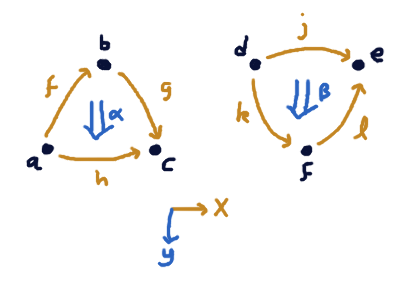

Orienting Simplices
Suppose I have $n$ points in $\R^{n-1}$. For example, 3 points in $\R^2$.
If I think of these as objects in a 2-category, and I think
of the $x$-direction of $\R^2$ as representing 'the flow of time as far
as the 1-cells are concerned', and the $y$-direction as 'the flow
of time as far as the 2-cells are concerned', then there's two possible sorts
of 2-cell that these points (together with the lines and triangle that lie between them) can represent. One where two morphisms 'compose'
across the 2-cell to yield a third, and one where one 'decomposes' into two morphisms.

More precisely, I want to observe the following things:
There is a categorical sense in which every cell lies
either in the domain or codomain of the higher-dimensional cells
it's part of. For example, $a$ is in the domain of $h$, $b$ is in the codomain of $g$, $h$ is in the codomain of $\alpha$,
$f$ and $g$ are both in the domain of $\alpha$, $k$ is in the codomain of $\beta$, etc.
But there is also a geometric sense in which we can take any cell
and ask whether it looks like it's in the domain or codomain of a higher dimensional cell.
For example, to ask whether $h$ is in the codomain of $\alpha$, we ask
whether
\[\det\left(\begin{matrix}a_x & a_y & 1 \\ c_x & c_y & 1 \\ b_x & b_y & 1
\end{matrix}\right) < 0
\]
at least assuming the points are laid out as depicted, with $c_x - a_x$.
In general, if we have points $q, p^1, \ldots, p^n$ in $\R^{n}$ then
\[\det\left(\begin{matrix}
p^1_1 & p^1_2 & \cdots & p^1_{n} & 1\\
p^2_1 & p^2_2 & \cdots & p^2_{n} & 1\\
\vdots & \vdots & \ddots & \vdots & \vdots \\
p^n_1 & p^n_2 & \cdots & p^n_{n} & 1\\
q_1 & q_2 & \cdots & q_{n} & 1
\end{matrix}\right)
\over
\det\left(\begin{matrix}
p^1_1 & p^1_2 & \cdots & p^1_{n-1} & 1\\
p^2_1 & p^2_2 & \cdots & p^2_{n-1} & 1\\
\vdots & \vdots & \ddots & \vdots & \vdots \\
p^n_1 & p^n_2 & \cdots & p^n_{n-1} & 1
\end{matrix}\right)
\]
is how far $q$ is — in the $n$-coordinate — from the hyperplane determined by $p^1, \ldots, p^n$.
Thus, this will be positive if it's on the `positive $n$-coordinate side' of the hyperplane,
and negative for the other.
So if we have a large sequence of points $S = (S^1, \ldots, S^m) \in (\R^\infty)^m$, then
we can extract some coarse information about how they are shaped, as some data
of type
\[\Pi n < m. \Pi K : \mathcal P_n(S). \Pi q \in (S \setminus K) . \{\dom, \cod\} \]
That is, for any $n < m$ and any $n$-sized subset $p^1, \ldots p^n \subseteq S$ and some
$q \in S \setminus p^1, \ldots, p^n $ not already in that subset,
we can project each of the $p^1, \ldots, p^n, q$ from $\R^\infty$ down to just $\R^n$ by
taking their first $n$ coordinates, and ask
whether the sign of the expression is above is positive or negative. We interpret this
as telling us whether the $(n-1)$-cell determined by $p^1, \ldots p^n$ is in the domain
or codomain of the $n$-cell determined by $q, p^1, \ldots p^n$.
Question
For each $m$, how many distinct such functions can actually be attained by a suitable
choice of $m$ points $S$? Call this $\phi(m)$.
I know $\phi(1) = 1$ and $\phi(2) = 2$ and $\phi(3) = 12$, (because of the two triangle diagrams
above, plus a factor of $3!$ for permutations of merely in which order the three vertices appear in $S$)
and I think $\phi(4) = 576 = 4! \cdot 2 \cdot 2 \cdot 6$, because of a choice of permutation
of the 4 vertices, a choice of how to flip all the 2-cells, a choice
of how to flip the 3-cell, and the fact that 6 of the following 8 diagrams
 seem 'consistent' with a
downward-pointing 2-cell going 'out of the page' from the top 1-cell of each little
diagram to the bottom 1-cell. Where 'consistency' means that there is a 'least' and 'greatest'
1-path.
But I'm less confident about that.
seem 'consistent' with a
downward-pointing 2-cell going 'out of the page' from the top 1-cell of each little
diagram to the bottom 1-cell. Where 'consistency' means that there is a 'least' and 'greatest'
1-path.
But I'm less confident about that.